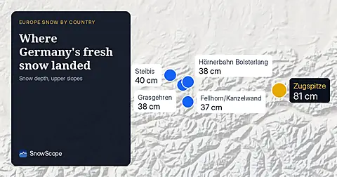

Germany snow report: snow depth, new snow and the week ahead
In Germany about 18,780 km² of high ground is white today, 41 % of the country's mapped mountains and hills. That is about the same as yesterday. The deepest resort is Zugspitze with 86 cm on its upper slopes. Little or no new snow is expected in the week ahead.
See the live snow forecast for Zugspitze in the SnowScope appSnow depth, powder alerts and the 3D map, free.Today at a glance
| White area | 18,780 km² |
|---|---|
| Share of the high ground | 41 % |
| Most new snow in 24 h | 1 cm |
| Most new snow in 3 days | 12 cm |
| Next 3 days (snowiest slopes) | 1 cm |
| Next 7 days | 2 cm |
| Mostly white from | 800 m |
| Resorts with snow on top | 187 of 231 |
The last seven days
On 21 November about 3,050 km² was white; today it is 18,780 km².
The snow cover grew by 15,730 km² over these days.
The biggest three-day snowfall of the period reached 23 cm (to 22 November).
This season against a normal year
2 of the 5 deepest resorts are above their usual snow depth for 27 November.
Zugspitze: 30 cm at about 1,811 m, a normal year has 30 cm; Garmisch-Classic: 20 cm at about 1,387 m, a normal year has 16 cm; Steibis: 12 cm at about 1,282 m, a normal year has 16 cm; Karwendelbahn (Dammkar-Mittenwal: 15 cm at about 1,589 m, a normal year has 19 cm; Fellhorn/Kanzelwand: 21 cm at about 1,442 m, a normal year has 16 cm.
These depths are for one height on each mountain, below the top.
In past winters the best snow at Zugspitze usually came early March / late March.
Snowiest resorts today
Zugspitze leads with 86 cm on its upper slopes.
Then come Garmisch-Classic (41 cm), Steibis (36 cm), Karwendelbahn (Dammkar-Mittenwal (33 cm) and Fellhorn/Kanzelwand (33 cm).
| Resort | Upper slopes | New, 3 days | Next 3 days | Top |
|---|---|---|---|---|
| Zugspitze | 86 cm | 24 cm | 2 cm | 2,627 m |
| Garmisch-Classic | 41 cm | 18 cm | 2 cm | 2,047 m |
| Steibis | 36 cm | 6 cm | 1 cm | 1,704 m |
| Karwendelbahn (Dammkar-Mittenwal | 33 cm | 18 cm | 1 cm | 2,246 m |
| Fellhorn/Kanzelwand | 33 cm | 10 cm | 1 cm | 1,965 m |
Where the snow is coming next
The first flakes are expected around Monday 30 November.
The last three days brought the most fresh snow to the Bavarian Alps, the Allgäu Alps and the Bavarian Forest.
The second week could add up to 15 cm where it snows most.
Snow by height
Height by height: 500-1,000 m: 1 cm on average, 36 % white; 1,000-1,500 m: 9 cm on average, 97 % white; 1,500-2,000 m: 18 cm on average, 100 % white; 2,000-2,500 m: 27 cm on average, 100 % white.
Most of the ground is white from about 800 m up.
Planning a trip
Above 1,000 m the ground is almost fully white (97 % covered), so runs up there have a continuous base.
Between 500 m and 1,000 m the cover is patchy, about 36 % white: expect grass and stones between the snow.
The resorts with the highest lifts are the safest bet: Zugspitze (2,627 m), Karwendelbahn (Dammkar-Mittenwal (2,246 m) and Garmisch-Classic (2,047 m).
Little new snow is expected in the next three days, so today's picture should hold for a weekend trip.
Day by day
- Friday 27 November · 18,780 km² white, up to 12 cm of new snow in three days, deepest Zugspitze (86 cm)
- Thursday 26 November · 18,440 km² white, up to 12 cm of new snow in three days, deepest Zugspitze (74 cm)
- Wednesday 25 November · 6,800 km² white, up to 3 cm of new snow in three days, deepest Zugspitze (56 cm)
- Tuesday 24 November · 6,350 km² white, up to 13 cm of new snow in three days, deepest Zugspitze (59 cm)
- Monday 23 November · 8,840 km² white, up to 21 cm of new snow in three days, deepest Zugspitze (63 cm)
- Sunday 22 November · 10,730 km² white, up to 23 cm of new snow in three days, deepest Zugspitze (81 cm) · Germany gains 5,270 km² of snow cover in seven days
- Saturday 21 November · 3,050 km² white, up to 18 cm of new snow in three days, deepest Zugspitze (81 cm) · Where Germany's fresh snow landed: 39 cm in the Allgäu Alps
Questions and answers
Is there snow in Germany right now?
Yes. About 18,780 km² of high ground is white, 41 % of the mapped mountains. The deepest resort is Zugspitze with 86 cm on its upper slopes.
Where is the most snow in Germany today?
Zugspitze leads with 86 cm on its upper slopes. Then come Garmisch-Classic (41 cm), Steibis (36 cm) and Karwendelbahn (Dammkar-Mittenwal (33 cm).
Will it snow in Germany this week?
The first flakes are expected around Monday 30 November. The last three days brought the most fresh snow to the Bavarian Alps, the Allgäu Alps and the Bavarian Forest.
From what height is there snow in Germany?
Most of the ground is white from about 800 m up.
How much new snow fell in Germany in the last three days?
Up to 12 cm on the snowiest slopes, 1 cm of it in the last 24 hours. At least 5 cm fell over some 7,310 km². The last three days brought the most fresh snow to the Bavarian Alps, the Allgäu Alps and the Bavarian Forest.
How many ski resorts in Germany have snow?
187 of the 231 resorts we follow have snow on their upper slopes today. Snow on top does not mean the lifts are open: check the resort before you go.
When is the best time to ski in Germany?
In past winters the best snow at Zugspitze usually came early March / late March.
Is the season off to a good start in Germany?
2 of the 5 deepest resorts are above their usual snow depth for 27 November.
Stories about Germany

German snow cover jumped from 5,460 to 10,730 km² in a week. The Allgäu Alps lead with 47 cm of fresh snow in 72 hours as of 22 November.

Fresh snow fell unevenly across Germany in the past 72 hours: 39 cm in the Allgäu Alps, 31 cm in the Bavarian Alps, 16 cm in the Black Forest. Data from 2026-11-21.

Germany has 1790 km2 of snow cover on 20 November, Austria leads with 44 percent white cover. The Allgäu Alps received 34 cm in 72 hours.